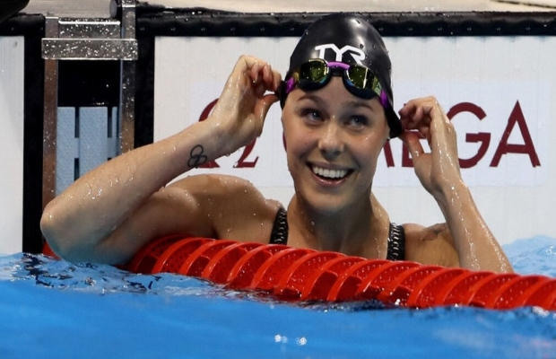

World Simming
Professional Simming
Swimming is an individual or team racing sport that requires the use of one's entire body to move through water.
The sport takes place in pools or open water (e.g., in a sea or lake). Competitive swimming is one of the most popular
Olympic sports, with varied distance events in butterfly, backstroke, breaststroke, freestyle, and individual medley.
In addition to these individual events, four swimmers can take part in either a freestyle or medley relay. A medley relay consists
of four swimmers who will each swim a different stroke, ordered as backstroke, breaststroke, butterfly and freestyle.
